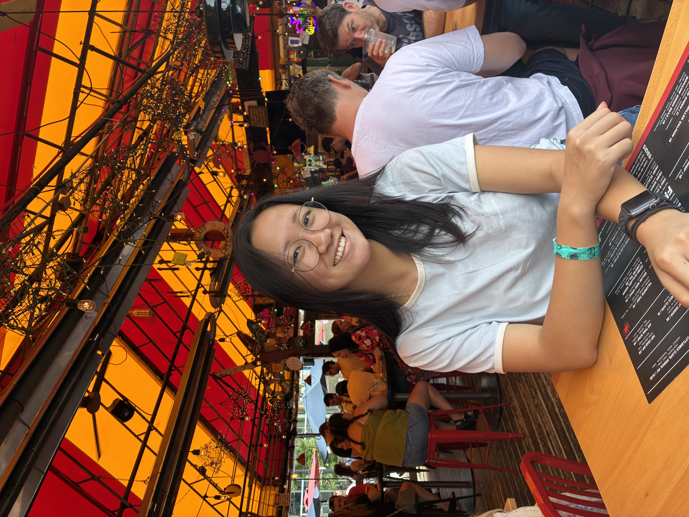

Olivia Guo
I'm an undergraduate @ UC Berkeley studying EECS (electrical engineering & computer science) and Bioengineering.
I'm interested in hardware systems, project management, and social impact.
Currently, I am...
- designing a preamplifier @ Berkeley Imaging Systems Laboratory.
- teaching assistant for CS61A: Stucture & Interpretation of Computer Programs.
- president & outside hitter for the Cal Women's Club Volleyball team.
Previously, I was...
- Software Engineering Intern @ Pfizer.
- R&D Systems Engineering Intern @ Spiro Robotics.
- DNA nanomaterials researcher @ Ti Lab.
In my free time, I like to play volleyball, run long distances, and read historical fiction.
oliviaguo8@berkeley.edu | LinkedIn | Last Updated: 10/13/2026